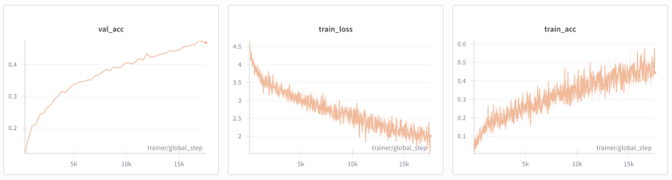
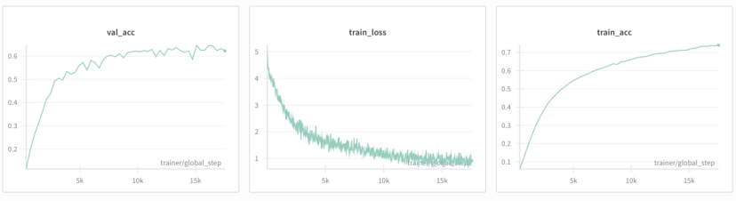
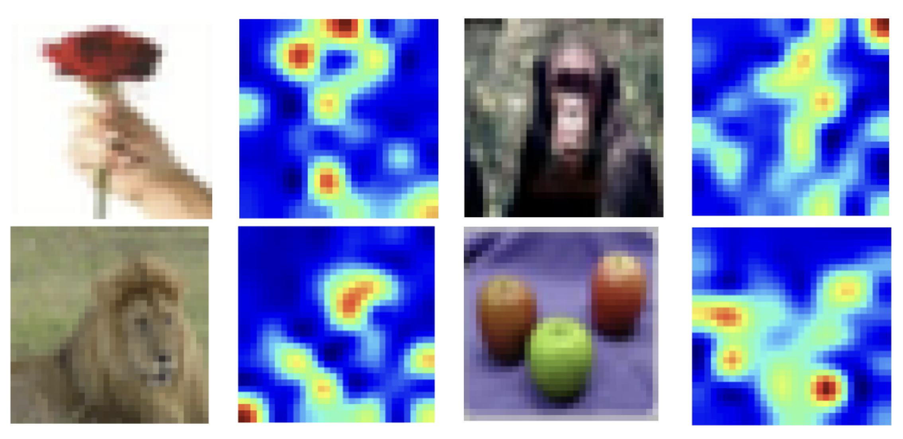

MATH4999 Independent Capstone Project · Score: A
Aaron Branson Cigres Li · HKUST · November 2025
A comprehensive study connecting mathematical analysis, implementation, and practical application of Transformer architectures
Why divide by $\sqrt{d_k}$? Without scaling, variance of dot products grows with dimension:
Scaling restores unit variance, keeping softmax in a well-behaved regime:
Self-attention is permutation-equivariant. Sinusoidal encoding breaks symmetry, and relative positions are captured via a linear transformation:
Proven to be independent of position — only depends on offset $k$
Gradients decay exponentially through layers:
When $ab < 1$, gradients vanish in early layers
Identity shortcut adds eigenvalue shift of 1:
Prevents gradient from compounding to zero
Adaptive scaling $|\frac{\gamma}{\sigma}|$ counteracts weight magnitude variations, keeping each gradient term closer to 1
| Vision Transformer (ViT) | ResNet18 | |
|---|---|---|
| Mechanism | Self-attention (global) | Convolution (local) |
| Max path length | $O(1)$ | $O(n/k)$ |
| Inductive bias | Minimal — learns from data | Translation invariance, locality |
| Data efficiency | Needs more data | Generalizes from less |
| CIFAR-100 accuracy | 47% | 64% |
Both trained from scratch for 50 epochs with data augmentation. ResNet's convolutional inductive biases give a clear advantage on limited data.


ResNet18 converges faster and achieves higher accuracy. ViT's noisy training reflects the lack of built-in spatial priors — it must learn spatial relationships entirely from data.
Directly visualizing attention maps in deep Transformers is misleading — each layer's attention is over already-mixed representations, not original inputs.
Attention Rollout (Abnar & Zuidema, 2020) recursively multiplies attention matrices across all layers to track how information flows from input to output:
where $\tilde{A}_l = \text{norm}(\frac{1}{2}(A_l + I))$ accounts for residual connections

CLS token attends to semantically relevant regions — flower petals, face, fruit
Instead of updating all parameters, Low-Rank Adaptation (Hu et al., 2022) injects small trainable matrices into frozen layers:
where $B \in \mathbb{R}^{d \times r}$, $A \in \mathbb{R}^{r \times k}$, with rank $r \ll \min(d,k)$
Implemented from first principles on ViT-16 pretrained on ImageNet, fine-tuned for CIFAR-100 classification.
LoRA used half the training time of full fine-tuning
Aaron Branson Cigres Li · HKUST MATH4999 · November 2025